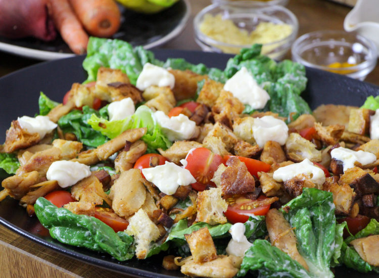
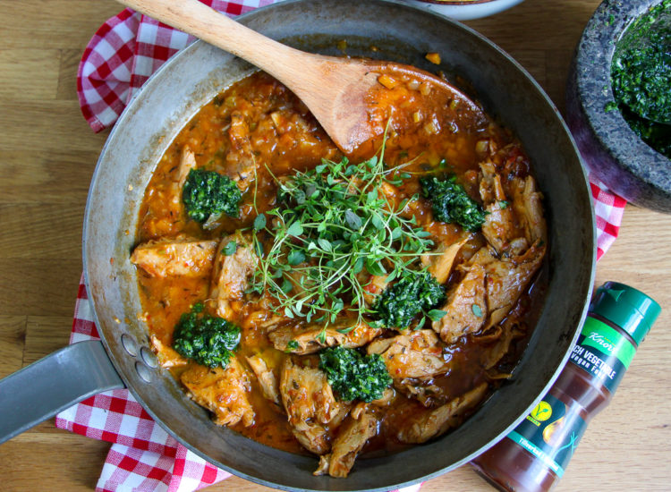
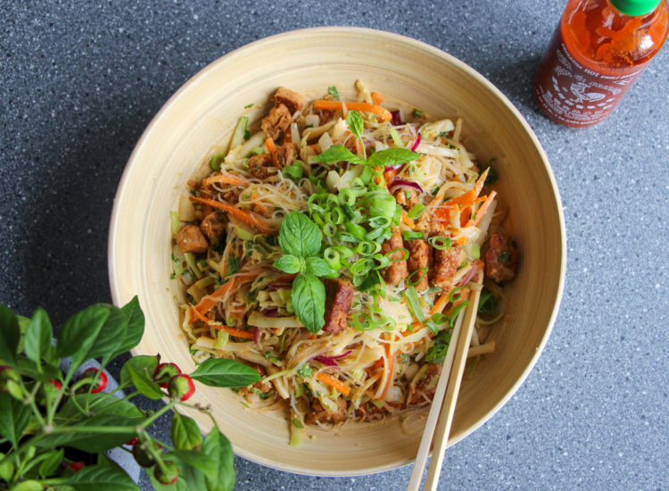
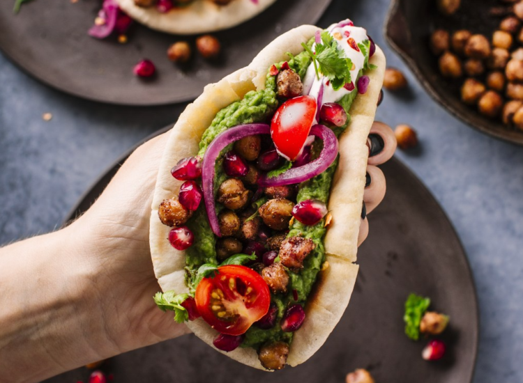
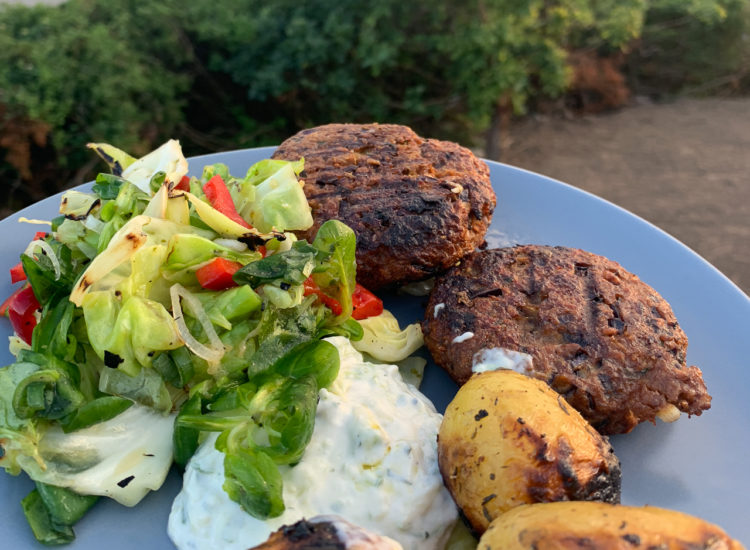
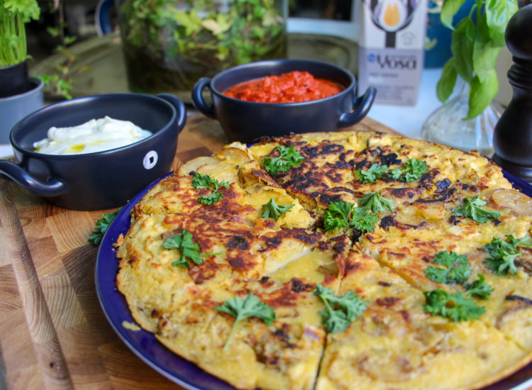

Gröna recept
Start
Recept
Desserter
växtbaserad kost
Min sida

Enkel Ceasarsallad

Osso buco

Glasnudelsallad med jordnötssås och tofu

Pita med rostade kikärtor

Grekiska biffar med tsatsiki

Spansk tortilla med aioli och mojo rojo
Tillbaka till startsidan